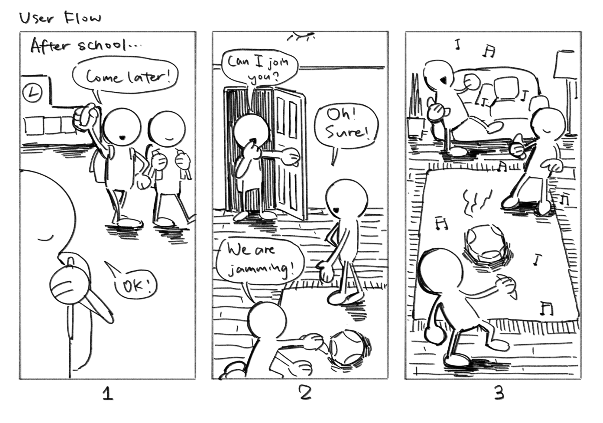
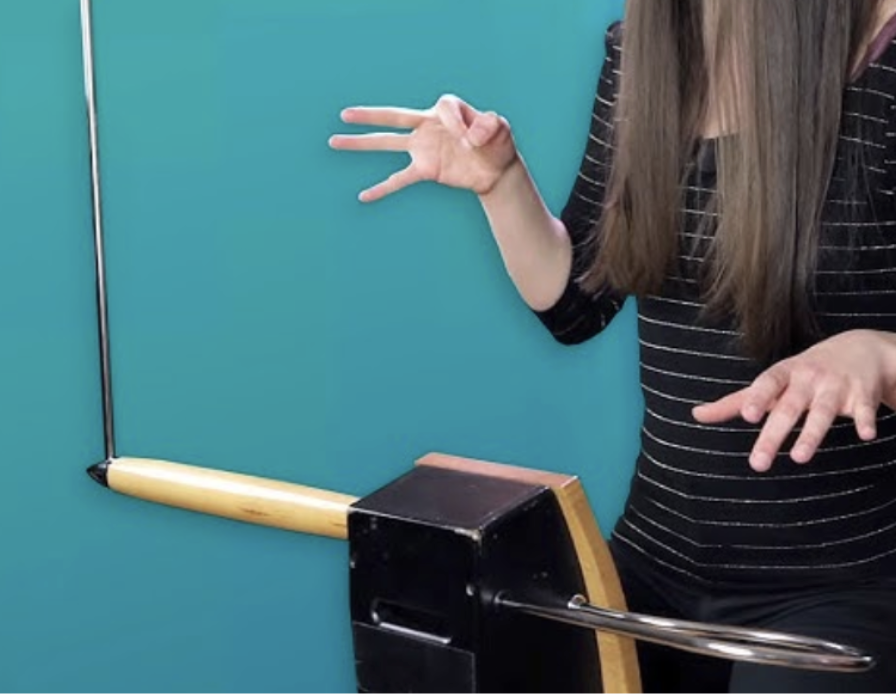
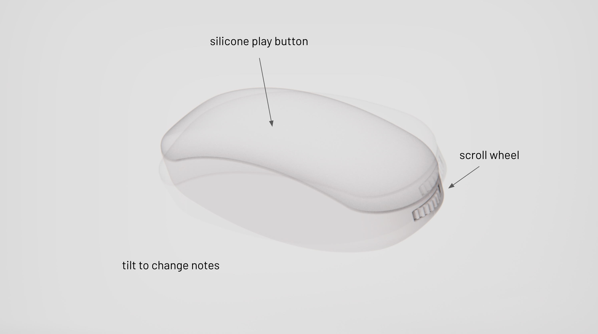
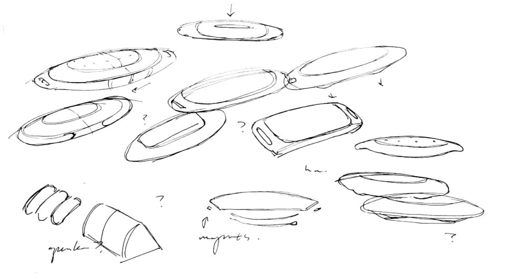
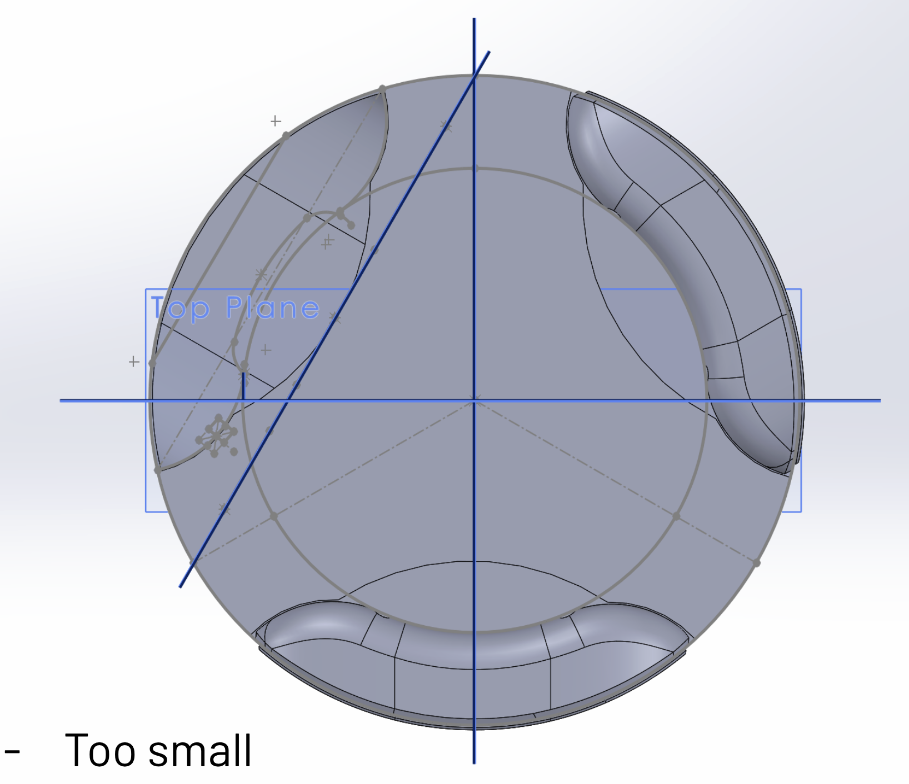
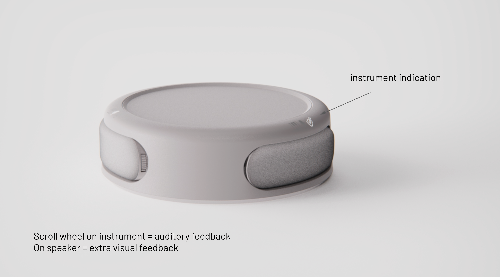
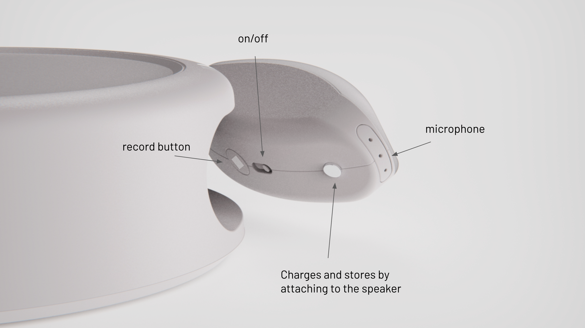
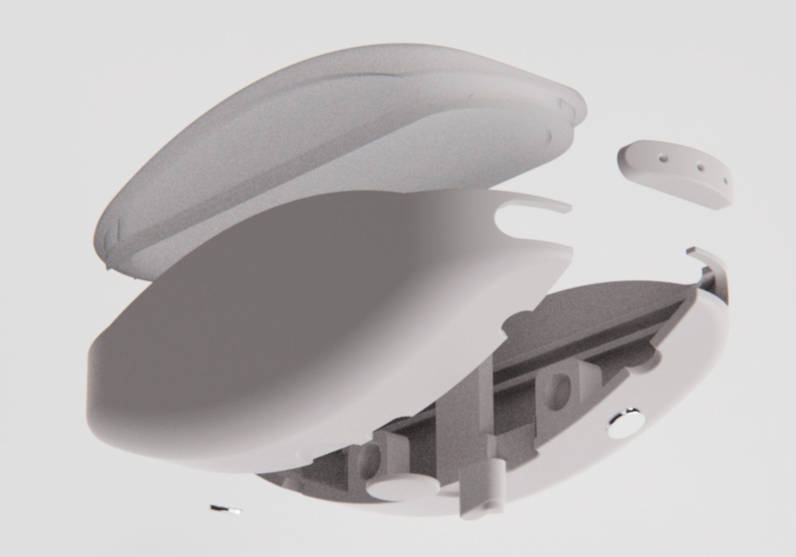
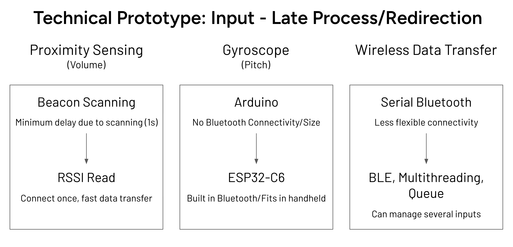
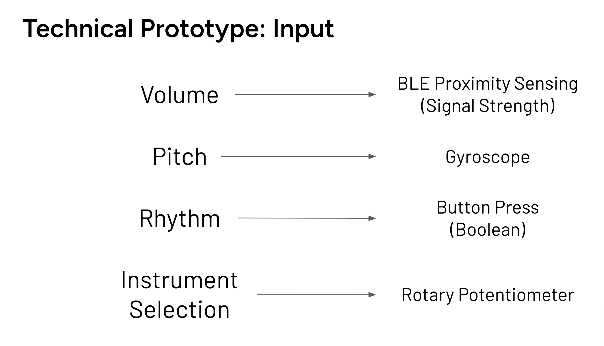

Two friends are already jamming. A third arrives, picks up an instrument, and joins the sound before the conversation has to begin.
JamSesh pairs several handheld instruments with a shared speaker. Friends can make sound through movement and proximity, without needing to know how to play a conventional instrument.
This opening is an imagined use scenario from the team's storyboard.

Make the first note easier than the first conversation
We began with the awkwardness of joining an in-person hangout. We wanted an off-screen activity that gave teenagers something to explore together, while keeping the stakes of performing low.
The theremin suggested a way in: the body can shape sound without a familiar keyboard or fretboard. JamSesh takes that openness into a group setting, where playing together matters more than getting a note right.

The sound changes as people move
Each handheld offers a few gestures that can be discovered quickly. The proposed system lets the instruments respond to one another, so a change in distance becomes part of the music.
Find a pitch
Tilting the instrument changes the note.
Enter the rhythm
The large silicone button triggers sound and gives the hand a clear place to start.
Change the mix
Moving closer to another instrument changes volume. A scroll wheel selects the instrument sound.

A shape that asks to be tilted
The object needed a horizontal reference so tilting would feel deliberate. Early sketches tested symmetrical forms and a prominent button. In CAD, some versions felt too small or suggested the wrong grip. The refined form kept the button visible while giving the hand a broader, softer shape to hold.


The final proposal reads as a small object for play, with the top surface acting as both a button and a cue to tilt.
The handhelds return to a shared speaker
The speaker gives the group a common sound source and visual feedback for the selected instrument. The handhelds attach to it for storage and charging. The renders below describe the proposed product form and controls.



Bluetooth timing forced a rethink
Our early plan used Arduino. We changed to ESP32-C6 to handle the sensing and Bluetooth connection. The prototype maps gyroscope tilt to pitch, a button to played notes, a wheel to sound selection, and proximity to volume.
The presentation records a BLE scan delay of at least one second during development. We then got the multithreaded Python program working and used pydub for pitch remapping. The slides do not establish the latency of a finished, fully integrated device.


The next test is the invitation
We designed JamSesh around exploration instead of musical skill. The form, gesture mapping, and shared speaker all serve the same hope: that someone can join by trying one small action and hearing it become part of a group sound.
The presentation shows the product proposal and technical prototype. It does not document testing with teenagers in a real hangout. That is the next question for the project: whether the interaction feels welcoming to a newcomer, and whether the sound responds quickly enough to support playing together.